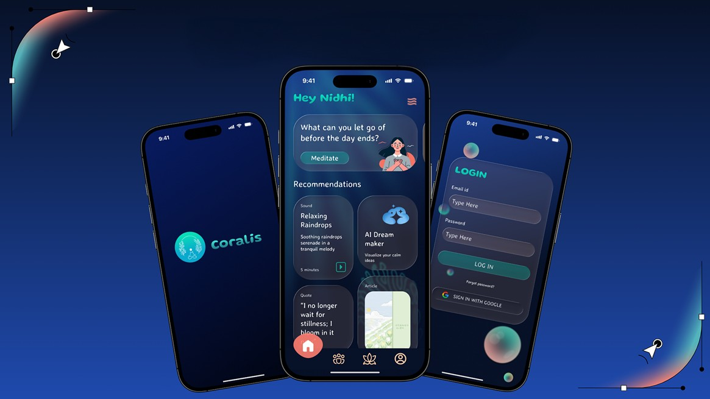
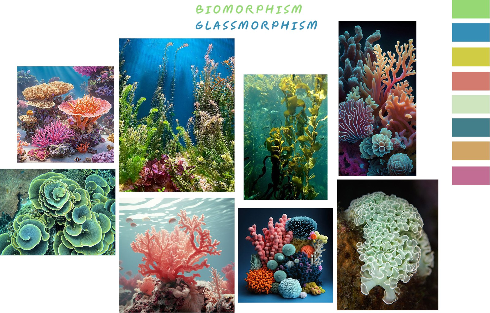
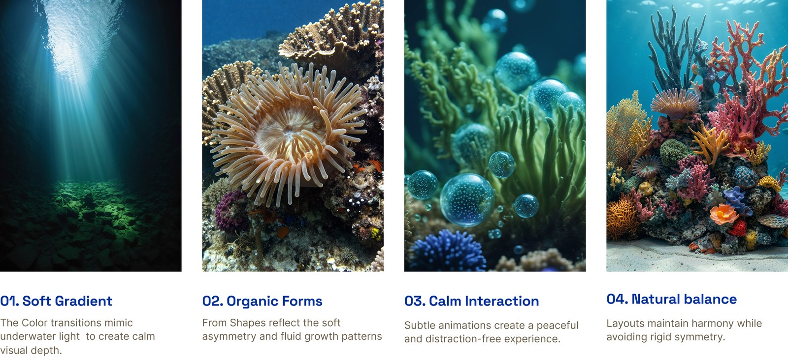
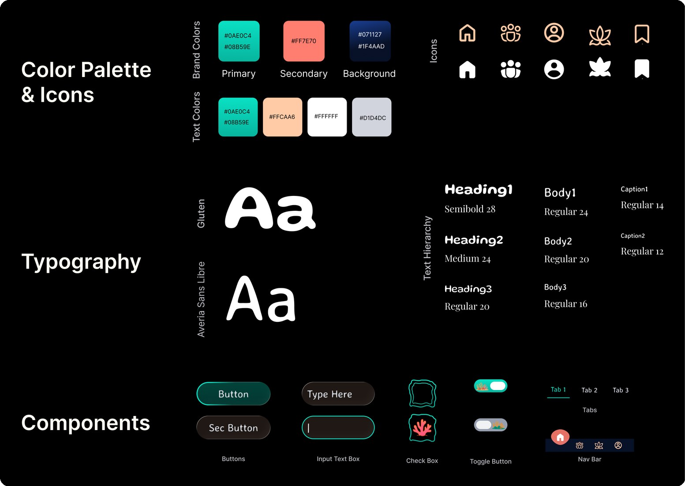
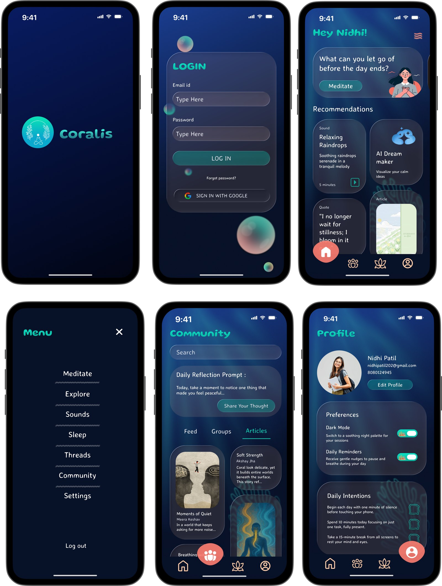

Design System · Visual Interface Design
Anthozoa
Design System

At a glance
Nature-inspired design, system-level thinking.
Anthozoa is a nature-inspired design system translating natural elements associated with corals and balance into components for wellness applications. The goal was to build user-own visual design system for digital interfaces, inspired from nature, that captures the look-and-feel and materiality of thriving coral.
01 — Research & Inspiration
Why Hydrophytes?
While exploring sources of inspiration for the design system, I reflected on themes that resonate strongly with the idea of nature and balance. Underwater plants and colors and coral forms and biomorphic yet rhythmic, important yet background. Reflecting also the calming and flowing views of natural environments that made the patterns felt so warm and inviting.

02 — Design Properties
Soft structures inspired by coral growth.
Underwater textures informed the design properties — organic gradients, glassy morphism and calm interaction states. Four core properties emerged: Soft Gradient, Organic Forms, Calm Interaction, and Natural Balance.

03 — Style Guide
Translating inspiration into tokens and components.
Color palette, icon set, typography scale, and reusable components were documented as a full style guide. Every token maps directly to the natural reference it came from.

04 — Wireframing
Bridging the concept and final UI.
Low-fidelity wireframes mapped user flows before the design system was applied, ensuring the components solved real navigation problems rather than just looking beautiful.

05 — Prototype
The system in motion.
Interactive prototypes demonstrated how the Anthozoa components behave across onboarding, community, and profile flows within the wellness app context.